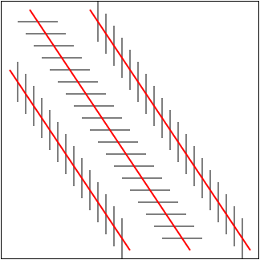
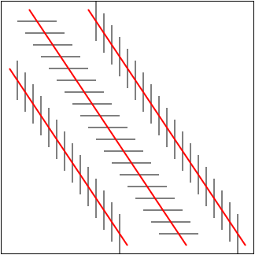
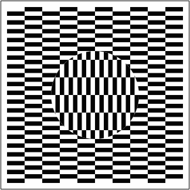
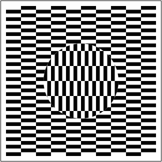

Cada dibujo se puede guardar en un fichero distinto que se puede llamar svg-ficheros-4-X-Y.html, donde X es el número de ejercicio e Y el número de dibujo. Las imágenes SVG se muestran con un borde negro. En cada ejercicio se proporciona una plantilla de la página html que indica la porción del plano SVG mostrado en la imagen. Las figuras se han dibujado siempre en una zona de 600px x 300px con un margen de 10px alrededor, por lo que el tamaño total de la zona visible es de 620px x 320px.
Cree las imágenes SVG de este ejercicio a partir de la plantilla siguiente. Los valores de la imagen SVG se han elegido para mostrar el primer cuadrante y los ejes de coordenadas. La posición de los ejes se muestra en la imagen siguiente, pero no debe mostrarse en las imágenes del ejercicio.
Cree las imágenes SVG propuestas en los ejercicios a partir de la plantilla siguiente. Los valores de la imagen SVG se han elegido para mostrar el primer cuadrante y los ejes de coordenadas. La posición de los ejes se muestra en la imagen siguiente, pero no debe mostrarse en las imágenes del ejercicio.


 



 
